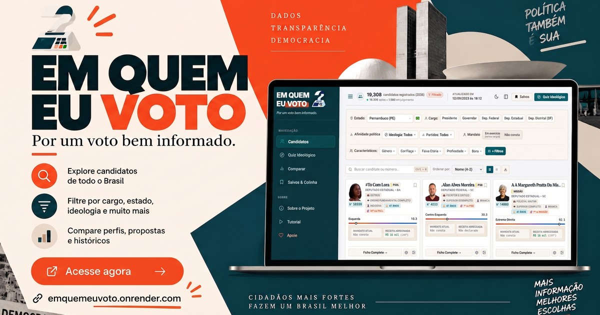

Em Quem Eu Voto
Setembro de 2026 • Web App
Guia e ferramenta interativa desenvolvida para auxiliar eleitores no processo de escolha de candidatos no sistema proporcional, considerando viabilidade eleitoral, alinhamento partidário e histórico parlamentar.